好习惯与好奇心，同样值得被珍惜
我们关注孩子的学习习惯、表达能力和成长节奏，也重视他们在课堂与日常生活中的每一点进步。
课堂适应
关注倾听、规则、任务意识与小学生活准备，帮孩子熟悉真实课堂节奏。
独立习惯
练习整理物品、表达需求与完成日常任务，让自理成为自然反应。
语言兴趣
借助故事、互动和可理解情景，鼓励孩子自然地开口表达。
尊重差异
关注每位孩子不同的适应节奏与参与方式，不拿孩子互相比较。
两条成长路径，找到合适的节奏
从入学适应到语言启蒙，了解适合不同成长阶段的课程内容与学习重点。
幼小衔接
重点关注小学适应、课堂规则、专注倾听、自理与社交能力，不以超前刷题为目标。拼音、识字和数学思维以感知、游戏化启蒙为主。
少儿英语
围绕绘本故事、听说互动、自然拼读与阶段性读写，引导孩子把英语当作交流工具。POWER UP 原版教材，平均8—10人小班。
从第一次咨询到孩子入班，只要三步
往下滚动，看看每一步会发生什么。
电话沟通孩子情况
说明孩子年龄、目前班级和希望了解的方向。幼小衔接联系周老师，英语联系 Windy 老师，先确认当期班型和名额。
约 5 分钟 · 电话即可到校参观真实课堂
看看教室、食堂、午休室和活动场地，对照课表了解孩子的一天。可以带着问题清单来，逐项向老师核实。
人信汇二期一号门旁 · 建议提前预约确定班级与入学准备
核对班额、任课老师、教材、收费与请假退费条款，全部以书面约定为准，再安心把孩子交给我们。
书面确认 · 不口头承诺走进人信汇校区的日常
前台、教室、课堂与活动瞬间，都来自校区实拍。欢迎预约到校，实地感受孩子的学习环境。
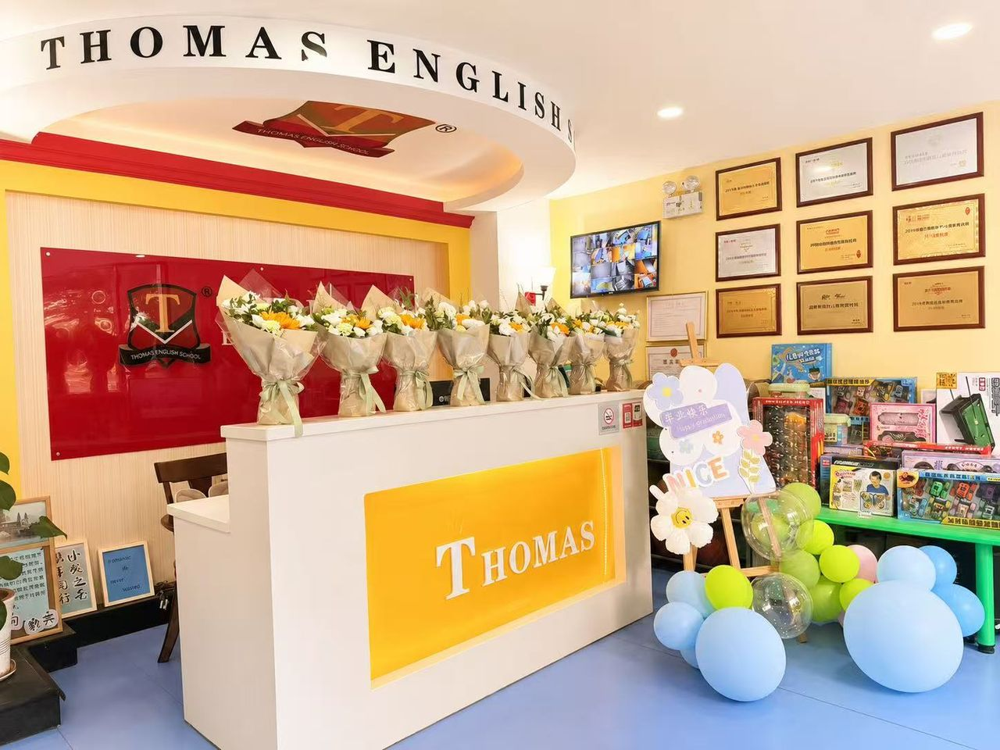
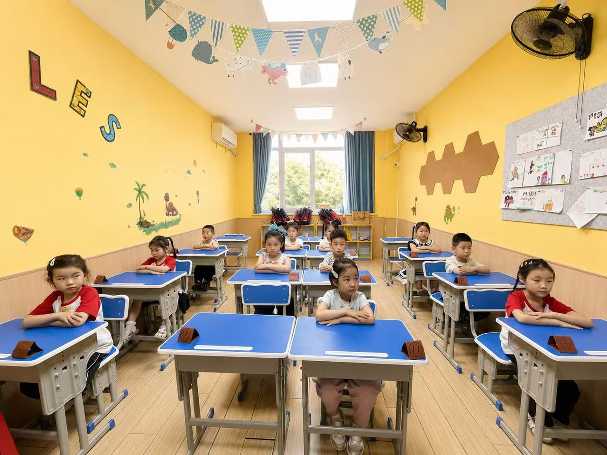

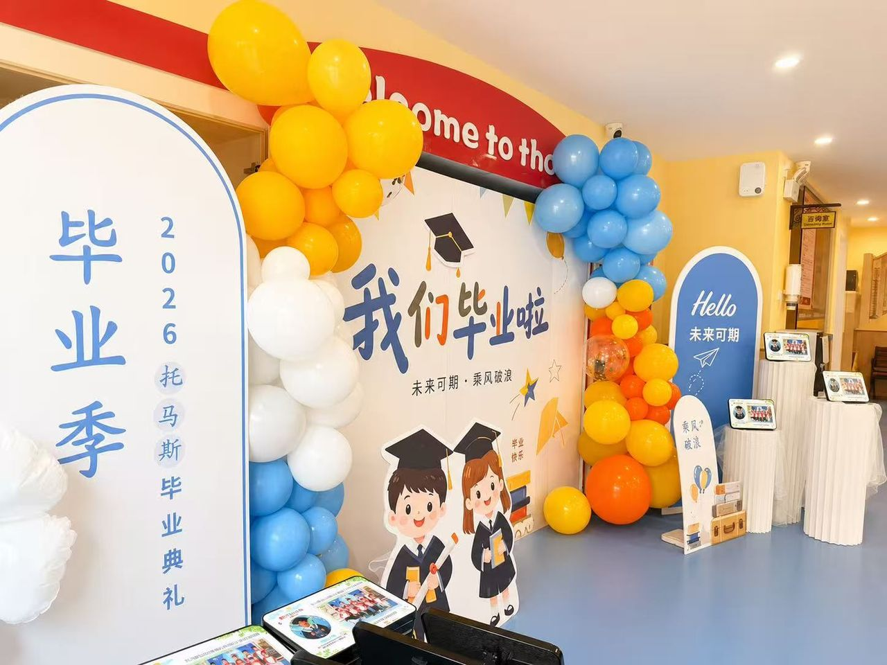

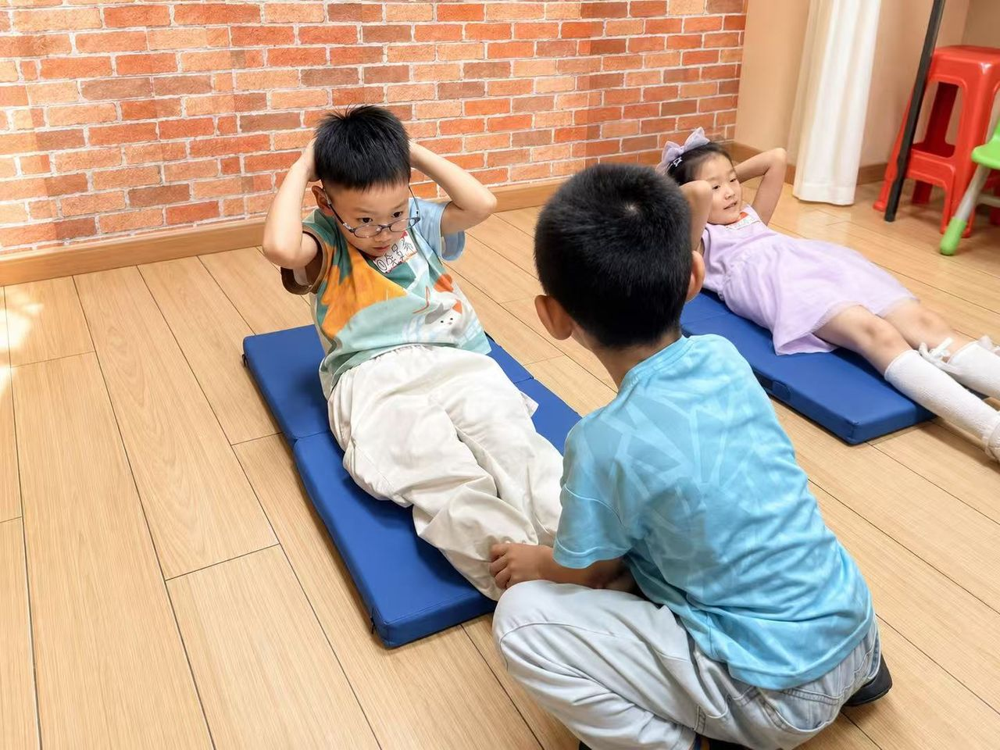
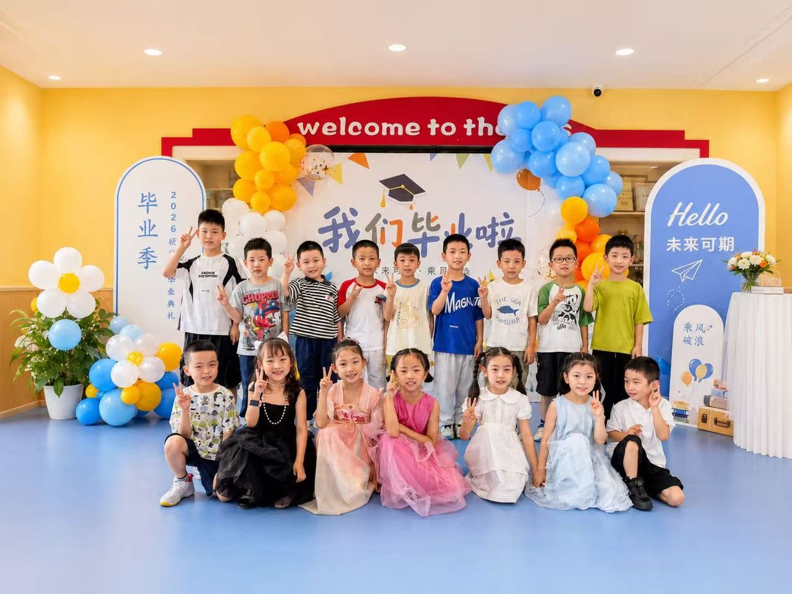
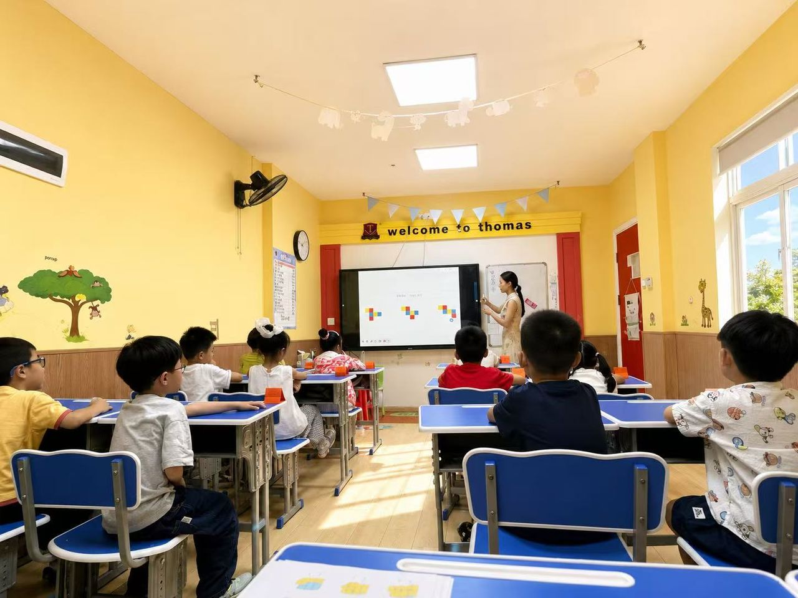
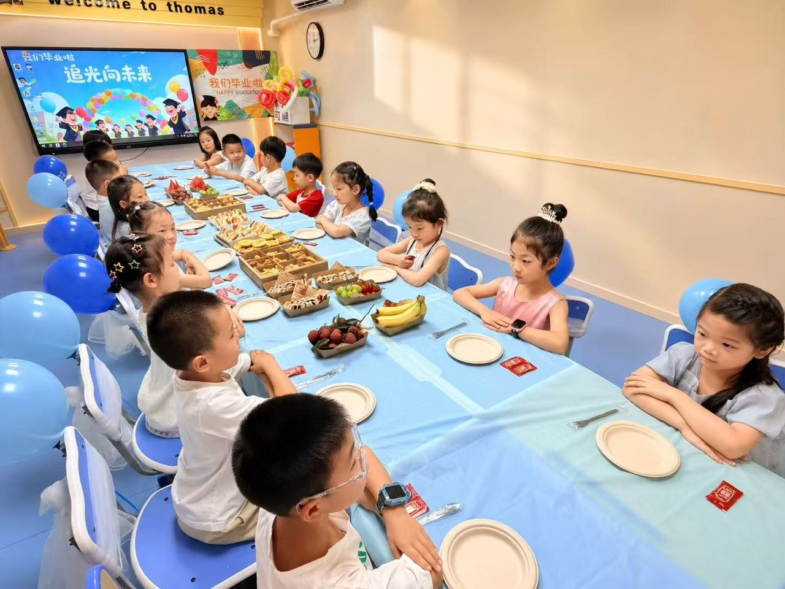
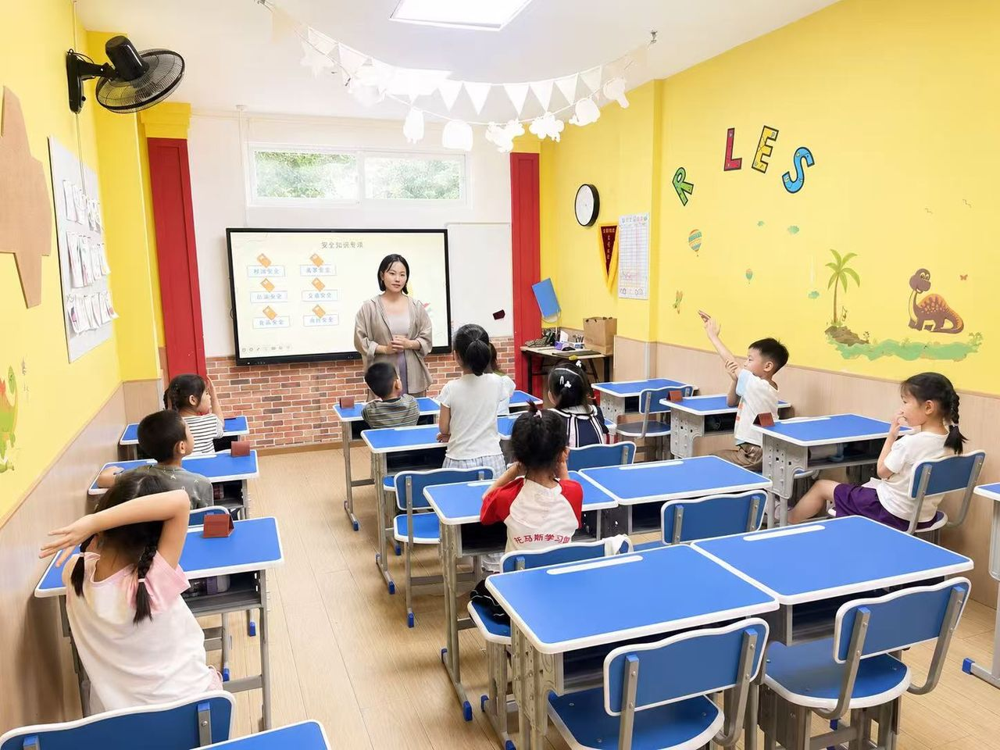
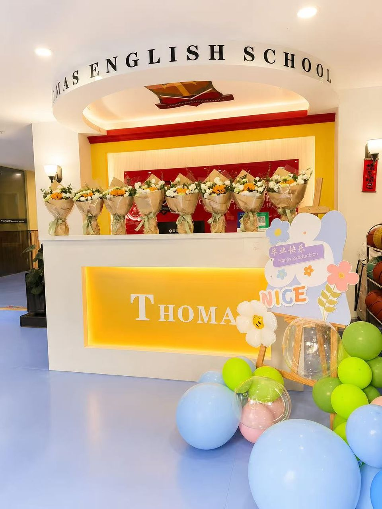


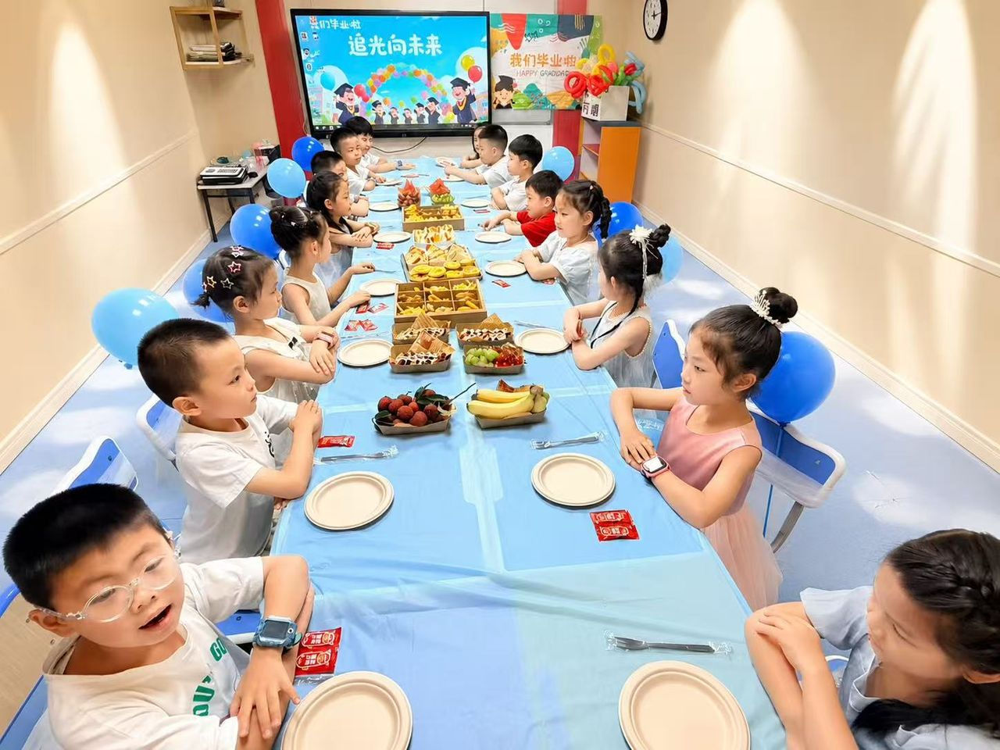
优先适应，不超前灌输
比起单纯比拼识字量或背单词数量，我们更关注孩子能否主动倾听、独立思考、勇敢尝试，并逐渐建立学习信心。
- 鼓励主动参与——在安全、包容的氛围里表达想法，允许不同的学习节奏。
- 理解规则和边界——学习与同伴相处、接受反馈、承担责任并修正行为。
- 完成有始有终的任务——从理解任务到独立检查，让学习能力落在日常行动中。
想了解一所机构值不值得选，可以从这里开始
从课程安排、师资、教学方式到日常管理，整理家长真正关心的选校问题。
面对面认识孩子的老师们
下方为校区提供的教师介绍卡，经历与年限按卡片记载。欢迎到校交流，确认当期任课安排。
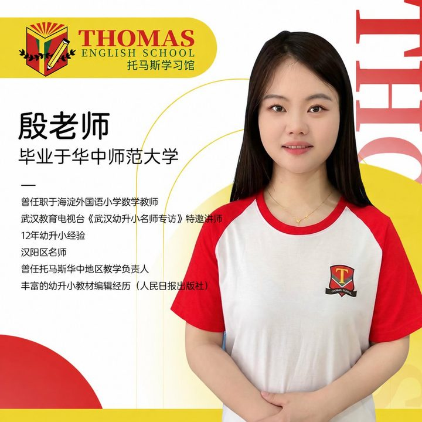
殷老师
毕业于华中师范大学，12年幼升小经验，汉阳区名师

周老师
毕业于湖北大学语文教育专业，8年幼小衔接经验
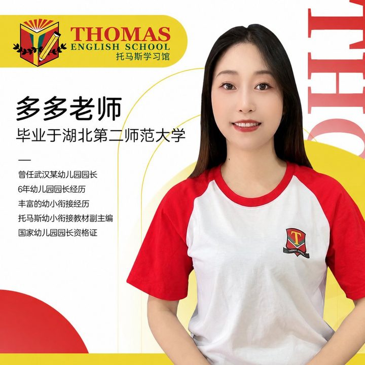
多多老师
毕业于湖北第二师范学院，6年幼儿园园长经历，托马斯幼小衔接教材副主编

余老师
毕业于江汉大学，5年幼小衔接经验
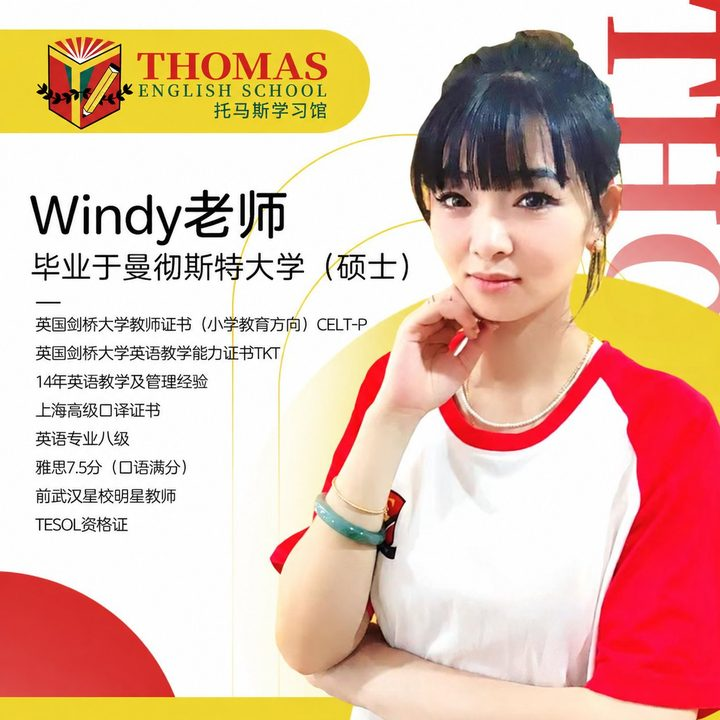
Windy 老师
曼彻斯特大学硕士，14年英语教学及管理经验，雅思7.5分口语满分

Jally 老师
毕业于中南民族大学，剑桥英语教学能力证书TKT1-3，熟悉Power Up原版教材
Mandy 老师
毕业于湖北民族大学，剑桥商务英语高级证书，7年幼少儿教学经验

林林老师
毕业于武汉科技大学，托马斯北京总部讲师，7年外冲经验
从了解孩子开始
关于课程年龄、内容和参观事宜，可先查看答案，再联系老师核实当期安排。
托马斯学习馆人信汇校区在哪里？
幼小衔接课程面向多大年龄？
少儿英语有哪些课程内容？
可以预约到校参观吗？
先了解课程，再预约参观
适合的课程因孩子年龄、基础与班级安排而异。可联系老师了解当期教学安排、收费及开放参观时间。